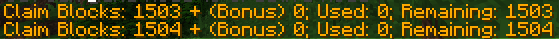

Server'da Kullanılan Modlar:
Server durumuna bakmak için tıkla
Login
,
Market
,
Claim
İlk girişte
/register şifre şifre
ile, sonraki girişlerde
/login şifre
ile giriş yapabilirsiniz. Aynı bilgisayardan girişlerde bazen şifre
istemeden de otomatik giriş yapar.

Market bloğu yapma resimdeki gibidir. Bu bloğu sandık, varil gibi
açılabilir şeylerin üstüne koyarsanız çalışır.
Claim alınmış bir bölgede kullanılması önerilir yoksa üstüne koyduğunuz
sandık direkt açılarak içinden eşya alınabilir.
Koyulduktan sonra sağ tık ile market menüsü açılır, satılanlar ve
değerleri oradan belirlenir.
Altın çapa ile claim alınabilir. Claim almak için minimum 100 blokluk bir alan seçilmelidir.

Altın çapayı elinize alınca claim alabileceğiniz blok sayısı chat kısmında
yazar, serverda oynadıkça blok sayınız artar. (afk kalırsanız artmaz)
Claim ayarlarını düzenlemek için
/flan menu
Eğer başkasının claimi içinde sıkıştıysanız çıkmak için
/flan trapped
Eğer claim içinde başka claim yapmak (subclaim) istiyorsanız
/flan switchMode SUBCLAIM
, geri normal claim moduna dönmek için
/flan switchMode DEFAULT